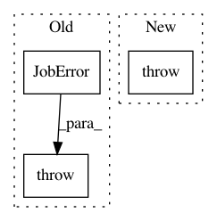

aacffe7106d8093ecfd52ff929a5fe71fcea716e,reframe/core/schedulers/pbs.py,PbsJob,get_available_nodes,#PbsJob#,91
Before Change
return preamble
def get_available_nodes(self):
raise JobError(
"pbs scheduler does not support listing of available nodes")
def filter_nodes(self, nodes):
raise JobError(
"pbs scheduler does not support filtering of available nodes")
After Change
return preamble
def get_available_nodes(self):
raise NotImplementedError(
"listing of available nodes is not supported by the pbs backend")
def filter_nodes(self, nodes, options):
raise NotImplementedError(
"filtering of nodes is not supported by the pbs backend")
In pattern: SUPERPATTERN
Frequency: 3
Non-data size: 3
Instances
Project Name: eth-cscs/reframe
Commit Name: aacffe7106d8093ecfd52ff929a5fe71fcea716e
Time: 2018-10-30
Author: manitaras@cscs.ch
File Name: reframe/core/schedulers/pbs.py
Class Name: PbsJob
Method Name: get_available_nodes
Project Name: eth-cscs/reframe
Commit Name: 60b3ebf0e70b576ef6edd6873a0f442ae1855a78
Time: 2019-11-21
Author: manitaras@cscs.ch
File Name: reframe/core/schedulers/__init__.py
Class Name: Job
Method Name: prepare
Project Name: eth-cscs/reframe
Commit Name: 80a98278a9664568faa85b61a8c5d5921cf906c6
Time: 2019-01-25
Author: karakasis@cscs.ch
File Name: reframe/core/schedulers/__init__.py
Class Name: Job
Method Name: prepare